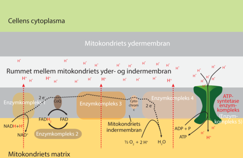

Hvad er elektrontransportkæde?
Elektrontransportkæden er en række af 5 enzymkompleksers som ligger i den inderste membran i mitokondriet. De 5 enzymkomplekser tager sammen, elektronerne fra NADH og FADH2 som de fik fra de tidligere stadier i respirationen.
Enzymkomplekserne kan både binde og afgive elektroner, så de kan transporteres fra første kompleks, til næste. Her bruges ilten som den sidste elektronacceptor, eller elektronkompleks fire. Under elektronernes vej gennem komplekserne, dannes der nok energi til at transportere H+ ud til mitokondriets to membraner. Dermed kommer en protongradient.
Der pumpes i alt 10 H+ gennem membranen for hvert NADH + H+ og 6 H+ for hvert FADH2.
I det sidste enzymkompleks foregår ATP syntetasen, som danner ATP ud af ADP og Pi. Der skal diffunderes 4 H+ bare for at danne ét ATP-molekyle. Derfor dannes der altså kun 1,5 molekyler ATP pr. FADH2, og 2,5 ATP-molekyler pr. NADH.
Den samlede produktion af ATP i respirationen er 30 ATP for hvert glukosemolekyle, eftersom der dannes 2 ATP i glykolysen og sendes 2 NADH videre til elektrontransportkæden, dermed kan man sige at der altså kommer 7 ATPmolekyler fra glykolysen, men for at få NADH fra cytoplasmaet til mitokondriets matrix, kræver det dog 2 ATP, og der vil være 5 tilbage. Så danner citronsyrecyklussen 2 ATP, 8 NADH, og 2 FADH2, hvilket i alt er nok til at skabe 25 ATP. Dermed får man altså i alt 30 ATP pr. glukosemolekyle.
Billedet kommer fra systime